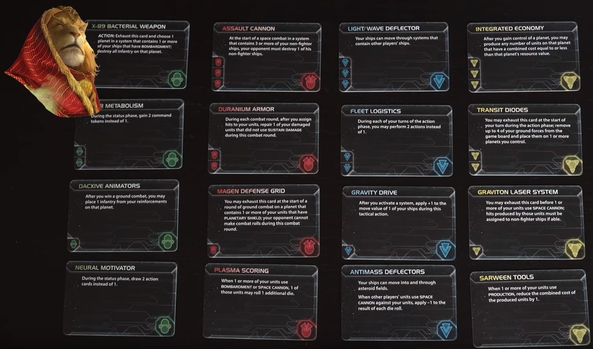

- Mecatol Rex
- Mecatol Rex can only be landed on immediately after active player spends 6 Influence
- That player also receives 1 VP
- Agenda Phase is unlocked
- Tech Cards
- Gained through RESEARCH (ie Technology Strategy card)
- Some Tech have prerequisite symbols listed on left side of card (Green, Red, Blue or Yellow)
- These can only be researched if player owns a matching Tech for each symbol listed
- Some Planets also have Tech symbols that can be used to satisfy prerequisites by exhausting
- Sustain Damage
- Some advanced ships have the Sustain Damage ability
- Instead of beind destroyed on a hit, player may flip ship over to cancel 1 hit
- Ship is repaired at end of round
References:
Tech cards (excluding ship upgrades and faction-specific techs)
Note that there's an error in the "--- Metabolism" green card. You gain 3 per turn instead of 2, not 2/1

The rulebook recommends these 6 races for the first game:
- The Xxcha Kingdom (Faction Sheet) (Background)
- The Barony of Letnev (Faction Sheet) (Background)
- The Federation of Sol (Faction Sheet) (Background)
- The Sardakk N'orr (Faction Sheet) (Background)
- The Emirates of Hacan (Faction Sheet) (Background)
- The Universities of Jol-Nar (Faction Sheet) (Background)
A full album of all the factions is here